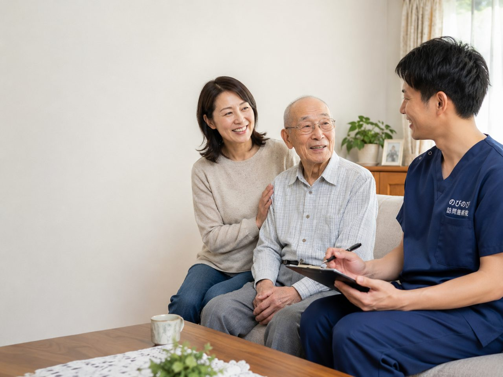

フルタイムは難しいけれど、資格は活かしたい。そういう方からのご相談をよくいただきます。訪問という仕事は、1軒ずつ時間が区切られているぶん、実は短い時間からでも組みやすい働き方です。ここでは、パート・アルバイト、時短勤務、業務委託という3つの形について、何がどこまで相談できるのかをはっきり書きます。
なぜ訪問は、短い時間からでも組みやすいのでしょうか
院の中で働くと、営業時間のあいだは基本的に在席していることになります。お客様がいつ来るか分からないからです。
訪問は逆で、うかがう時間があらかじめ決まっています。1軒あたり20〜30分で、その方のご都合に合わせて予定を組みます。ですから、午前だけ、週3日だけ、といった形でも仕事として成立します。
直行直帰ができることも効いています。院に立ち寄る必要がないので、朝は自宅から1軒目へ、最後の訪問を終えたらそのまま帰れます。移動の分の拘束時間が減ります。
パート・アルバイトの場合
週の日数や時間帯はご相談のうえで決めます。曜日を固定して担当を持っていただく形が中心です。同じ方に続けてうかがうほうが、ご本人にとっても安心ですし、変化にも気づきやすくなります。
給与は、働き方に合わせて別途ご相談となります。正職員の月給や資格手当の考え方は給料の記事に書いていますので、目安としてご覧ください。
時短勤務の場合
正職員のまま勤務時間を短くする形です。お子さんの送り迎えや、ご家族の介護と両立している方もいます。
子どもが急に熱を出した、というときの動き方も決めてあります。担当を代わる体制があるので、一人で抱え込まずにすみます。くわしくは子育てと両立している方の記事にまとめました。
業務委託の場合
すでにご自身で開業されている方、ほかのお仕事と並行したい方からのご相談が多い形です。件数や曜日の持ち方、報酬の決め方は、働き方に合わせて個別にご相談となります。
なお、業務委託は雇用とは扱いが異なります。社会保険や有給休暇といった正職員向けの制度は適用されませんので、そこを含めて条件をすり合わせたうえで決めていきます。
どの形でも変わらないこと
施術の中身は同じです。はり・きゅうをベースに、その日の体の状態を確認しながら、必要に応じて手技やストレッチ、無理のない範囲で身体を動かす運動なども組み合わせます。これらについて別途の料金はいただきません。
自費の施術や物販の営業ノルマもありません。件数を詰め込むことを前提にもしていません。短い時間で働く方に、無理な件数をお願いすることはないということです。
記録や報告はスマートフォンで行います。難しいパソコンスキルは不要です。
まずは、希望の形を教えてください
週に何日、どの時間帯なら動けるか。お子さんやご家族の予定でどこが動かせないか。運転ができるかどうか。この4つが分かると、現実的な形をご提案できます。
ご希望に合う担当がすぐに用意できないこともありますので、そのときは正直にお伝えします。WEB面接にも対応していますので、在職中の方もご相談ください。
よくある質問
Q週2日からでも働けますか？
Aご相談ください。曜日を固定して担当を持っていただく形が中心です。ご希望の日数と時間帯をお聞かせいただければ、組める形をご提案します。
Q午前だけ、午後だけという働き方はできますか？
A可能です。訪問はうかがう時間があらかじめ決まっているため、時間帯を区切った働き方が組みやすい仕事です。
Qパートや業務委託の給与はいくらですか？
A働き方に合わせて別途ご相談となります。正職員は鍼灸師が月給300,000円から、あん摩マッサージ指圧師が350,000円からです。
Q子どもが急に熱を出したとき、休めますか？
A担当を代わる体制があります。お互いさまという前提で運用していますので、一人で抱え込まずにご連絡ください。
Q業務委託でも研修は受けられますか？
A内容や期間はご相談のうえで決めます。まずは、いまの経験とご希望の働き方をお聞かせください。
Q正職員への切り替えはできますか？
Aご相談いただけます。ご家庭の状況が変わったタイミングで働き方を見直す方もいらっしゃいます。